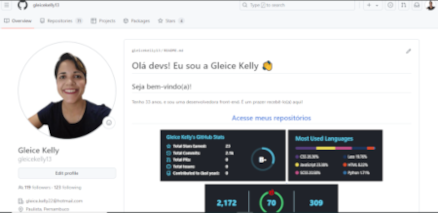

Gleice Kelly
Desenvolvedora Front-end
Portfólio
-

Site de sorveteria responsivo desenvolvido em React JS, que possui três páginas e possibilita fazer a navegação entre elas.
-

Página web responsiva de uma loja de óculos, desenvolvida em React JS e possui navegação interna.
-

Site responsivo para uma clínica médica, desenvolvido com as tecnologia HTML e CSS.
-

Website responsivo de uma cafeteria utilizando as tecnologias HTML5 e CSS3, no qual foi aplicado a navegação interna e externa, e efeito parallax.
-

Fiquem à vontade para acessar meu Github, lá encontrará mais repositórios de projetos, alguns desenvolvidos como desafios propostos em cursos e outros exercícios de fixação.